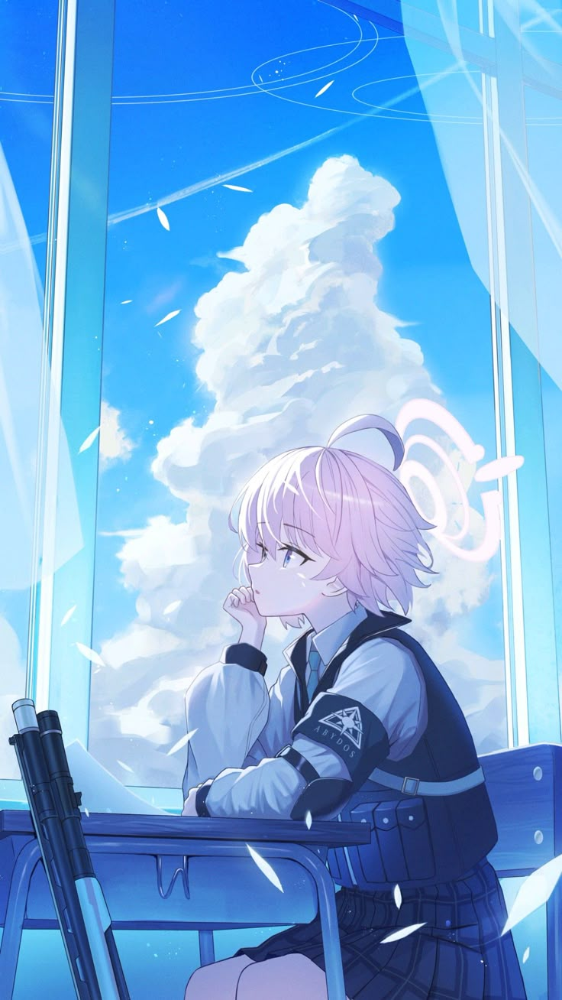

Takanashi Hoshino adalah ketua sementara dari Abydos Foreclosure Task Force, sebuah kelompok kecil yang berusaha mempertahankan Abydos High School dari kehancuran akibat utang dan pengaruh perusahaan besar.
Di mata banyak orang, Hoshino terlihat seperti gadis pemalas yang selalu mengantuk dan sering berbicara santai. Ia bahkan kerap memanggil dirinya sendiri dengan sebutan “ojisan” (paman tua) walaupun masih seorang siswi.
Namun di balik sikap malasnya, Hoshino sebenarnya adalah salah satu petarung terkuat di Abydos. Pengalaman bertarungnya jauh lebih tinggi dibanding anggota lain, dan ia sering berada di garis depan untuk melindungi teman-temannya.
Setelah insiden besar yang menimpa Abydos di masa lalu, Hoshino mulai memikul banyak beban sendirian. Ia mencoba terlihat santai agar anggota lain tidak merasa khawatir terhadap kondisi sekolah mereka.
Hoshino memiliki sifat santai, malas, dan suka bercanda. Ia hampir selalu terlihat mengantuk dan tidak terlalu serius dalam banyak situasi.
Walaupun begitu, Hoshino sangat peduli terhadap teman-temannya dan rela melakukan apa pun demi melindungi Abydos.
Saat keadaan menjadi berbahaya, kepribadiannya bisa berubah drastis menjadi sangat tenang, dewasa, dan mengintimidasi.
Hoshino memiliki hubungan yang sangat dekat dengan anggota Abydos lainnya seperti Shiroko, Nonomi, Serika, dan Ayane.
Ia sangat dihormati oleh junior-juniornya karena dianggap sebagai simbol kekuatan sekaligus orang yang selalu melindungi mereka.
Dalam cerita utama Blue Archive, hubungan Hoshino dengan Yume menjadi salah satu bagian penting yang sangat memengaruhi kehidupannya.